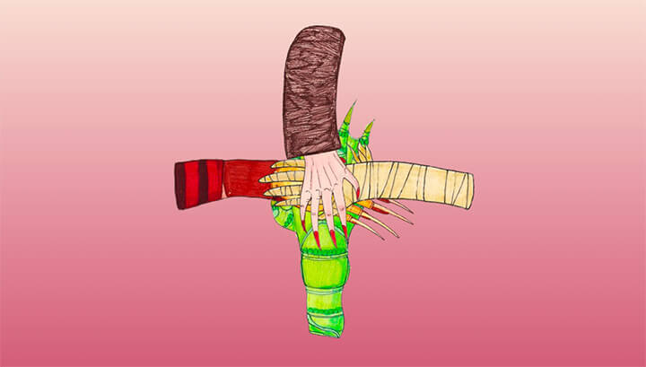

Pour cet exercice, vous devez recréer une scène où des monstres jouent au jeu d’enfants d’empilement des mains.
Aperçu du résultat 👇
Couleurs 🎨
Médias
Aucun Pen ne vous est fourni pour cet exercice. Vous devrez vous en créer un sur CodePen et écrire l'ensemble du HTML et du CSS.
1. Freddy Krueger
2. Nosferatu
3. L'Étrange Créature du Lac Noir
4. La momie Toutes les images de mains ont la même taille, superposez-les en CSS. Leur ordre d'apparition devrait être différent en ce moment de celui sur l'aperçu du résultat ci-dessus ☝️ En l'aide du CSS seulement, changer l'ordre d'empilement des mains, de sorte que celle de Nosferatu soit sur le dessus, suivi de celle de la momie, de Freddy et finalement de la créature.
Linear-gradient
Générer un dégradé.
Z-index
Order d'apparition des éléments dans le flux